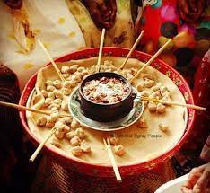

Tihilo!

Fig. Tihilo Ethiopian food
This food is very common in the northern part of Ethiopia in the Tigray region.

Fig. Several Ethiopian foods served in 1 dish.
Here are the techniques to Eat Tihilo
- You are going to use the stick as a spoon (more like chinease sticks).
- Then you stick the little ball of "Tihilo" within the spicy traditional ingredient.